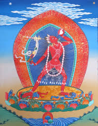

Ваджрайогини в Буддизме Ваджраяны является воплощением высшей трансцендентальной недвойственной мудрости. В полу-гневной форме воплощает Красную Тару.
Ваджрайогини является освободительницей благодаря недвойственной мудрости и искусным средствам она способна помогать всем существам, перенося их через океан страдания обусловленного бытия.
Термин Дакини означает «небесная странница», «танцующая в небе» из этого следует, что все буддийские дакини всегда пребывают на высшем уровне реальности, будучи воплощением женского аспекта Просветления, изначальной недвойственной мудрости пространства, внутренней активности. Дакини являются защитницами Учителей и Учения. Совместно с Даками, мужским аспектом радости, внешней активности и энергии они являют собой высшую законченность целостности.
В иконографии Ваджрайогини изображают как дакиню, у нее две руки, цвет её тела красный. Танцуя на лотосе, левой ногой Ваджрайогиня попирает человеческую фигуру, символизирующую привязанность к различным концепциям, либо двумя ногами втаптывает две фигуры - символы мешающих чувств и жестких идей.
В правой руке у Ваджрайогини нож дигуг отсекающий неведение, в левой руке капала чаша с нектаром. Локтевым сгибом этой же руки она придерживает кхатвангу, указывающую на тайный аспект её партнёра.
Ваджрайогини имеет три глаза, она украшена тантрическими украшениями из костей, диадемой из пяти черепов, которая является символом освобождения от пяти основных "ядов ума" негативных эмоций, на санскрите их называю клеша, вот их перечень: неведение, привязанность, гнев, зависть и гордость.
В тантре Чакрасамвары Ваджрайогини является супругой Херуки, ее также могут называть Ваджраварахи.
В нашем магазине вы можете купить Ваджрайогини тханку либо статуэтку высокого качества.